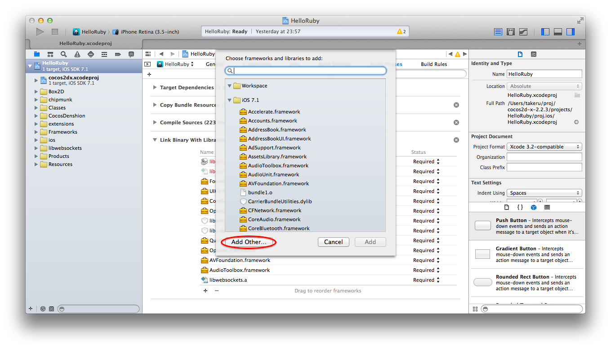

mruby binding for cocos2d-x
This project is maintained by takeru
Download cocos2d-x-2.2.x.zip, and unzip.
http://www.cocos2d-x.org/download
Create new cocos2dx cpp project.
tkrmb2:~% cd ~/proj/cocos2d-x-2.2.3/tools/project-creator
tkrmb2:~/proj/.../tools/project-creator% ./create_project.py -project HelloRuby -package com.example.helloruby -language cpp
proj.ios : Done!
proj.android : Done!
proj.win32 : Done!
proj.winrt : Done!
proj.wp8 : Done!
proj.mac : Done!
proj.blackberry : Done!
proj.linux : Done!
proj.marmalade : Done!
proj.tizen : Done!
proj.wp8-xaml : Done!
New project has been created in this path: /Users/takeru/proj/cocos2d-x-2.2.3/projects/HelloRuby
Have Fun!
tkrmb2:~/proj/.../tools/project-creator% cd /Users/takeru/proj/cocos2d-x-2.2.3/projects/HelloRuby
tkrmb2:~/proj/.../projects/HelloRuby% open ./proj.ios/HelloRuby.xcodeproj
Clone and Build MRuby.framework https://github.com/carsonmcdonald/ios-ruby-embedded#build
tkrmb2:~/proj% git clone git://github.com/carsonmcdonald/ios-ruby-embedded.git
Cloning into 'ios-ruby-embedded'...
remote: Reusing existing pack: 304, done.
remote: Counting objects: 3, done.
remote: Compressing objects: 100% (3/3), done.
remote: Total 307 (delta 0), reused 0 (delta 0)
Receiving objects: 100% (307/307), 40.97 KiB | 0 bytes/s, done.
Resolving deltas: 100% (139/139), done.
Checking connectivity... done.
tkrmb2:~/proj% cd ios-ruby-embedded
tkrmb2:~/proj/ios-ruby-embedded% git submodule init
Submodule 'mruby' (https://github.com/mruby/mruby.git) registered for path 'mruby'
tkrmb2:~/proj/ios-ruby-embedded% git submodule update
Cloning into 'mruby'...
remote: Reusing existing pack: 21866, done.
remote: Counting objects: 45, done.
remote: Compressing objects: 100% (39/39), done.
remote: Total 21911 (delta 15), reused 0 (delta 0)
Receiving objects: 100% (21911/21911), 5.97 MiB | 1.05 MiB/s, done.
Resolving deltas: 100% (13118/13118), done.
Checking connectivity... done.
Submodule path 'mruby': checked out '873fae9f4505a5f2b5146f969917e8b083269f36'
tkrmb2:~/proj/ios-ruby-embedded% rake ## (maybe to fix Rakefile '7.0' to '7.1')
(...snip...)
tkrmb2:~/proj/ios-ruby-embedded% ls -dl MRuby.framework
drwxr-xr-x 6 takeru staff 204 3 21 00:05 MRuby.framework
Install MRuby.framework https://github.com/carsonmcdonald/ios-ruby-embedded#install

Clone cocos2dx-mruby and generate stub files.
tkrmb2:~/proj% git clone git@github.com:takeru/cocos2dx-mruby.git
tkrmb2:~/proj% cd cocos2dx-mruby
tkrmb2:~/proj/cocos2dx-mruby% rm generated/*
tkrmb2:~/proj/cocos2dx-mruby% rake
tkrmb2:~/proj/cocos2dx-mruby% ls generated
MrubyBox2D.cpp MrubyBox2D.h MrubyCocos2d.cpp MrubyCocos2d.h
MrubyCocosDenshion.cpp MrubyCocosDenshion.h
Add *.cpp/h files into Classes.
Edit AppDelegate.cpp
#include "CCMrubyEngine.h"
CCMrubyEngine* pEngine = CCMrubyEngine::defaultEngine();
CCScriptEngineManager::sharedManager()->setScriptEngine(pEngine);
std::string path = CCFileUtils::sharedFileUtils()->fullPathForFilename("hello.rb");
pEngine->executeScriptFile(path.c_str());
Put hello.rb into Resources.
# hello.rb
puts 'hello!!'
include Cocos2d
d = CCDirector.sharedDirector
win_size = d.getWinSize
sprite = CCSprite.create("Icon-114.png")
sprite.setPosition(win_size.width/2, win_size.height/2)
scene = CCScene.create
scene.addChild(sprite)
d.runWithScene(scene)
And, click Run button.